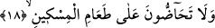
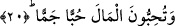

Yetime merhamet göster, gözünün yaşını sil
Yüzünde toz toprak varsa, onu şefkatle temizle.
el-Eşbâh ve’n-Nazâir’de der ki: Ücret vermeden herhangi bir yetimi çalıştırmak
dinimizce haramdır. İsterse çalıştıran kardeşi veya onu öğreten hocası olsun. Bu
hükümden sâdece yetimin annesi, bir de onu okutan hocası arkadaşını gidip getirmesi
için bir yere göndermişse bu müstesnâdır. Nitekim el-Kunye’de bu şekilde yer
almaktadır.
18. Yoksulu yedirmeye birbirinizi teşvik etmiyorsunuz.
Yani birbirinizi ister âile ferdi olsun, ister başkaları olsun Allah Teâlâ’nın size
nimetine şükrane olarak yoksulları yedirmeye teşvik etmiyorsunuz. Başkasını yoksulu
yedirmeye teşvik etmeyen kimse elbette kendisi de yedirmez. Buna göre mânâ şöyle
olmuş olur: Sizler hiçbir fakiri yedirmiyorsunuz ve yedirilmesini, doyurulmasını teşvik
etmiyorsunuz. Burada cimrilik yapan kimseyi etkili bir şekilde kınama vardır.
Mukâtil der ki: Kudame b. Maz’ûn, Ümeyye b. Halef’in himayesinde bir yetimdi.
Ümeyye ona hakkını vermiyordu. İşte bunun üzerine şimdi okuyacak olduğumuz âyet-i
kerime indi.
19. Haram helâl demeden mîrası yiyorsunuz.
Mîras ölen kimseden intikal eden mal demektir. Câhiliyye Arapları kadınlara ve
çocuklara mîras vermiyorlardı, onların paylarını yiyiyorlardı.
Bu âyette Arapların Hz. İbrahim ve İsmâil (a.s.)’dan aldıkları bir mîras olduğuna,
ancak onların bu mîrası diğer bazı ahkâmı değiştirdikleri gibi değiştirdiklerine işâret
vardır.
Onlar miras bırakan kimsenin haram, helal ve şüpheli demeden topladığu mirası bu
durumu bile bile yiyorlardı.
20. Malı aşırı biçimde seviyorsunuz.